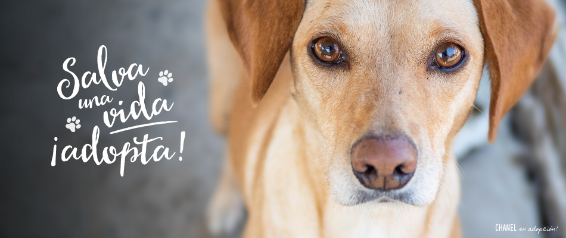

¡Salva una vida! Adopta un Perrito


¿Te estás planteando adoptar un perro ?
Muchas personas quieren adoptar un animal pero no saben cómo. Lo cierto es que debemos cumplir una serie de requisitos y prepararnos de una determinada manera para recibir a un nuevo miembro en la familia.
Descubre cómo funciona la política de adopción de estas asociaciones.
Son muchos los animales que necesitan tu ayuda. Mascotas abandonadas, heridas o maltratadas están a la espera de una casa de acogida que les quiera. Si te comprometes a ser un buen dueño y estás decidido a adoptar puedes consultar la web de protectoras de animales y acudir a los centros de acogida.